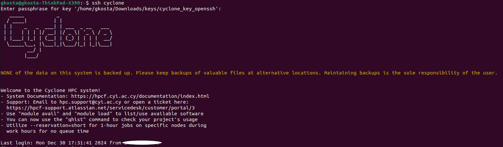
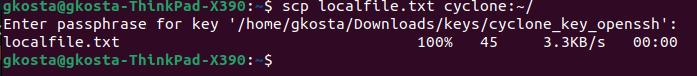
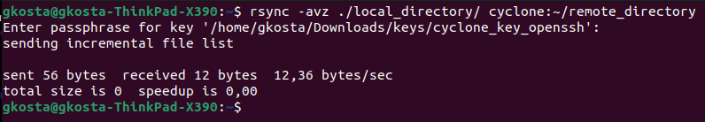
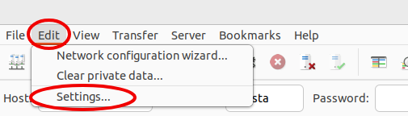
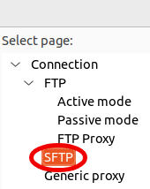
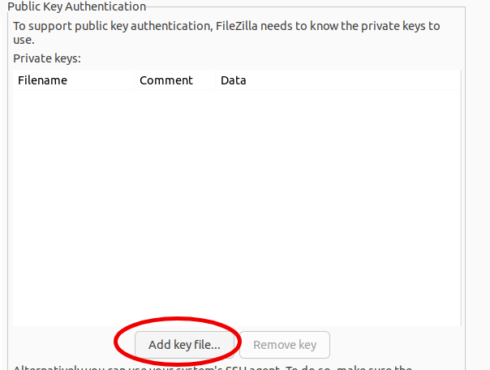
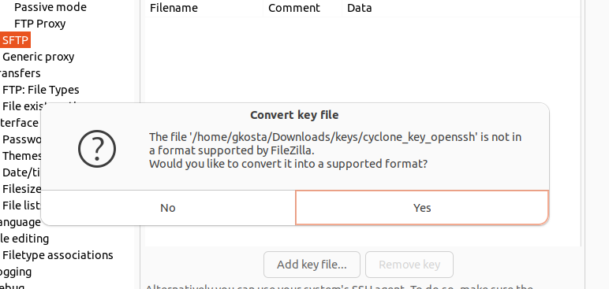
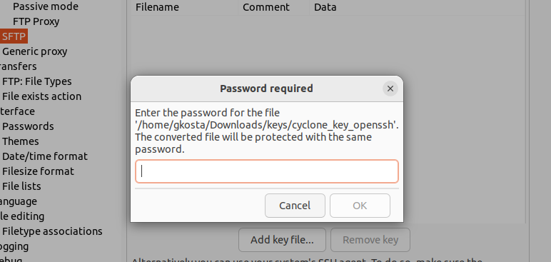
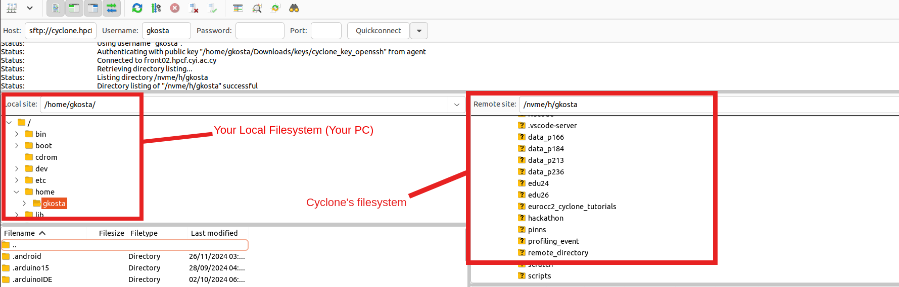

2. Accessing and Navigating Cyclone
2.1. Overview
This tutorial focuses on providing participants with the practical skills needed to access and navigate the Cyclone HPC system. It covers secure system access across different platforms, transferring files to and from Cyclone, and managing data within its file systems. Participants will also learn fundamental Linux commands to navigate directories and organize data effectively. By the end of this tutorial, users will have connected to Cyclone, transferred files, and explored the directory structure using basic Linux commands.
2.2. Learning Objectives
By the end of this tutorial, participants will be able to:
- Securely access Cyclone using SSH, with tailored solutions for different operating systems (Linux, macOS, Windows).
- Transfer data to and from Cyclone using tools like scp, rsync, and FileZilla.
- Navigate Cyclone’s directory structure and manage files effectively using basic Linux commands.
- Understand best practices for data organization and storage across Cyclone’s file systems, including strategies for long-term data management.
2.3. Prerequisites
- A Cyclone account (contact your system administrator if you don't have one)
- A computer with internet connection
- Administrator rights or permission to install software (for some setup options)
2.4. Getting Started
2.4.1. What is SSH and Why is it Important?
SSH, or Secure Shell, is a secure way to access and manage remote systems, such as High-Performance Computing (HPC) resources, over a network. It encrypts all communication, protecting sensitive information from being intercepted by unauthorized users. SSH is essential because it provides a safe and efficient way to connect to powerful remote systems for tasks like running simulations, managing files, and analyzing data. Instead of using vulnerable passwords, SSH often uses a system called public-key cryptography to verify your identity.
Here’s how it works: SSH relies on a pair of keys—a public key and a private key. The public key is shared with the remote system (the server), acting like a lock, while the private key stays safely on your computer, working as the unique key that can open that lock. When you try to connect, the server sends a challenge that only your private key can solve. If it’s solved correctly, the server knows it’s you, and the connection is established securely. This approach ensures that even if someone intercepts the communication, they can’t access your data or impersonate you. SSH combines simplicity and robust security, making it an indispensable tool for accessing and using HPC systems effectively.
2.4.2. For MacOS and Linux Users
Open the Terminal application
- On MacOS: Use Spotlight (Command + Space) and type "Terminal"
- On Linux: Use your system's application launcher and search for "Terminal"
- Keep this Terminal window open throughout the setup process
2.4.3. For Windows Users
Choose your terminal:
- If using PowerShell: Search for "PowerShell" in the Start menu and run as Administrator
- If using Git Bash (recommended): Launch Git Bash from the Start menu
2.5. Setting Up SSH and your keys
⚠️ Remember to replace
usernamewith your actual Cyclone username in all examples.
2.5.1. MacOS and Linux
Using SSH keys is more secure and convenient than password authentication. Here's how to set them up:
Managing SSH Keys
Start the SSH agent:
eval "$(ssh-agent -s)"
Add your SSH key to the agent:
If you used another filename or directory to store your ssh key you generated, make sure to change it
ssh-add ~/.ssh/id_rsa
SSH Config File Setup
Navigate to your SSH directory:
cd ~/.ssh/
To simplify connections create or edit
~/.ssh/config with nano:
nano config
In the nano editor, add these lines:
Host cyclone
HostName cyclone.hpcf.cyi.ac.cy
User your_username
IdentityFile ~/.ssh/id_rsa
If you're using macOS, add this to your
~/.ssh/config file to make the key persistent:
Host *
UseKeychain yes
AddKeysToAgent yes
IdentityFile ~/.ssh/id_rsa
To save the file:
- Press Ctrl + X
- Press Y to confirm
- Press Enter to save
ssh cyclone
2.5.2. Windows
Option 1: Using PowerShell
1. Start the SSH Agent
Open PowerShell as Administrator. Then check if the SSH agent service is running:
Get-Service ssh-agent
If the service is stopped, enable and start it:
# Set the service to manual startup
Set-Service ssh-agent -StartupType Manual
# Start the service
Start-Service ssh-agent
2. Add Your SSH Key
Add your private key to the SSH agent:
ssh-add $env:USERPROFILE\.ssh\id_rsa
To verify if the key was added:
ssh-add -l
3. Connect to Cyclone
ssh username@cyclone.hpcf.cyi.ac.cy
Replace
username with your Cyclone username.
Option 2: Using Git Bash (Recommended)
⚠️ Using git bash doesn't require administrator permissions. Therefore this option will work even if Administrator restrictions apply on your computer.
1. Start Git Bash
- Download Git Bash from https://git-scm.com/downloads
- Install Git Bash accepting the default options
- Open Git Bash from your start menu
2. Add Your SSH Key
ssh-add ~/.ssh/id_rsa
3. Create SSH Config (Optional but Recommended)
Create or edit
~/.ssh/config:
nano ~/.ssh/config
Add these lines:
Host cyclone
HostName cyclone.hpcf.cyi.ac.cy
User your_username
IdentityFile ~/.ssh/id_rsa
⚠️ Replace your_username with your Cyclone username.
Save and close the file (Ctrl+X, then Y, then Enter)
4. Connect to Cyclone
If using SSH config:
ssh cyclone
Without SSH config:
ssh username@cyclone.hpcf.cyi.ac.cy
When you successfully ssh/login, you'll be greeted with this message:

⚠️ If you are having trouble ssh/logging, refer to the troubleshooting steps at the end or try again the process from the beginning.
2.6. Managing Data and Directories on Cyclone
2.6.1. Home Directory Structure
When you log in, your home directory (
/nvme/h/) typically contains:
# Project data links
data_p166/ -> /onyx/data/p166 # Shared project storage
data_p184/ -> /onyx/data/p184 # Another project
data_p213/ -> /onyx/data/p213 # And so on...
# Scratch space link
scratch/ -> /nvme/scratch/<username> # Personal scratch space
# Scratch space link for event
edu26/ -> /nvme/scratch/edu26 # Shared scratch space for events
💡 While these project directories (likedata_p166/) will appear to be in your home directory, they are actually symbolic links (shortcuts) pointing to their real location on the/onyx/data/storage system. This is why you'll see them listed when you runlsin your home directory, even though they're physically stored elsewhere.
For more information on Cyclones FileSystem please look at Tutorial 01.
To see the contents of your own directory you can use the
ls command when you login:
ls -a # prints all files/directories, including hidden ones
ls -l # prints visible directories in a list including important information like ownership, permissions, last date of modification
ls -la # you can combine flags, this creates a list with all files/directories
To see your current working directory:
pwd
2.6.2. Directory Organization Best Practices
Project Data Organization
# In your project directory (e.g., ~/data_p166/)
data_p166/
├── datasets/ # Shared input data
├── results/ # Project results
│ ├── experiment1/
│ └── experiment2/
└── shared_scripts/ # Project-specific scripts
# In your scratch space
scratch/
├── job_outputs/ # Temporary job results
├── temp_data/ # Temporary processing
└── checkpoints/ # Job checkpoints
Personal Organization
# In your home directory
scripts/ # Personal script collection
├── job_templates/ # Slurm job templates
├── analysis/ # Analysis scripts
└── utils/ # Utility scripts
⚠️ These directories aren't created by default, except the scratch and project specific parent directories.
2.6.3. Data Management Best Practices
Setting up a New Project Space
Using the
cd command to change directories:
# Navigate to your project directory
cd ~/data_p166
ℹ️ The ~/ we use in our commands points to the home directory
Using the
mkdir command to make a directory.
# Create standard project structure
mkdir -p datasets # For input data
mkdir -p results # For processed results
mkdir -p shared_scripts # For project-specific scripts
mkdir -p documentation # For project documentation
ℹ️The -p makes sure that any parent directories that don't already exist are created.
Working with Project Data
# Create a workspace in scratch for processing
mkdir -p ~/scratch/myanalysis
cd ~/scratch/myanalysis
# Copy input data to scratch for processing
cp ~/data_p166/datasets/input.dat ./
# After processing is complete, save important results
cp -r ./results ~/data_p166/results/analysis_20240319
# Clean up scratch space
cd ~
rm -rf ~/scratch/myanalysis
Space Management
Using the
du command you can view storage usage.
To monitor storage:
# Check project space usage
du -h /onyx/data/p166
ℹ️ The -h flag makes the sizes 'human readable' meaning it's converting them from bytes to MB/GB/TB
# Check scratch usage
du -hs ~/scratch
ℹ️ The-sflag summarizes the storage usage of the hole directory. So if you want file by file usage, removes.
Data Safety
- Keep important data in project directories
- Use scratch for temporary processing only
- Regularly clean scratch space
- Document data organization for team members
2.7. Best Practices Summary
-
Project Organization:
- Keep project data organized in project directories
- Use consistent structure across projects
-
Data Management:
- Store shared data in project directories
- Use scratch for temporary processing
- Clean up scratch regularly
- Document organization for team members
-
Job Workflow:
- Read input from project directories
- Process in scratch space
- Save results back to project directories
- Clean up scratch after job completion
-
Collaboration:
- Use project directories for sharing
- Maintain consistent directory structure
- Document data organization
- Communicate changes with team members
ℹ️ Remember that your project memberships determine both your compute resource allocation (via Slurm) and your access to shared storage spaces. Always specify the correct project ID in your Slurm jobs and organize your data accordingly.
2.8. Transferring Files
2.8.1. Before starting
- Open a terminal on your local machine (not on Cyclone)
-
Make sure you know:
- The full path of the file/directory on your local machine
- Where you want it to go on Cyclone (or vice versa)
-
All commands below should be run from your local machine's terminal
2.8.2. Using SCP (Secure Copy):
Transferring FROM your local machine TO Cyclone:
# Run this command on your local machine's terminal
scp /path/on/your/local/machine/localfile.txt cyclone:~/destination/on/cyclone/
Transferring FROM Cyclone TO your local machine:
# Run this command on your local machine's terminal
scp cyclone:~/path/on/cyclone/remotefile.txt /path/on/your/local/machine/
💡 If you have not created an ssh config file, replacecyclonewithusername@cyclone.hpcf.cyi.ac.cy
This is what it should look like:

2.8.3. Using Rsync (Recommended for Large Transfers)
Copying FROM your local machine TO Cyclone:
# Run this on your local machine's terminal
# The ./ refers to the current directory on your local machine
rsync -avz ./local_directory/ cyclone:~/remote_directory/

Copying FROM Cyclone TO your local machine:
# Run this on your local machine's terminal
rsync -avz cyclone:~/remote_directory/ ./local_directory/
ℹ️ All file transfer commands should be run from your local machine's terminal, not from within Cyclone. The paths before the colon (\:) refer to your local machine, while paths after the colon refer to locations on Cyclone.
2.8.4. Using FileZilla (Graphical Interface)
Download and install FileZilla. Then, go to
Edit → Settings

Go to
SFTP

Add your key

If your key is in OpenSSH format, you'll be prompted to convert your key. Press yes:

Then input your passphrase:

And then save the converted key. It's a good idea to keep it at the same place as the original in case you go looking for it in the future.
- Set up connection:
- Host:
sftp://cyclone.hpcf.cyi.ac.cy - Username:
your_username - Port:
22
- Host:
- Quick connect

Once you're connected you'll see your local directory on the left and cyclone on the right. You can now just drag and drop between the two and the transfer wil happen automatically!
2.9. Security Best Practices
- Use different keys for different services
- Regularly rotate keys (yearly)
- Always use strong passphrases
- Back up your private keys securely
- Never share private keys
2.10. Notes and Troubleshooting
If you don’t have OpenSSH, WSL, or Git Bash installed, refer to the Installation Guide.
2.10.2. ~/.ssh directory does not exist on Windows
Option 1: Using Powershell
- Open PowerShell.
- Press Windows Key > Search "Windows PowerShell" > Enter
- Navigate to your Home directory
This will take you to your home directory, typically something like
cd ~C:\Users\<YourUsername>. - Create the
.sshdirectory:mkdir .ssh - Verify that the directory was created:
If the
ls .ssh.sshfolder exists, the command will list its contents (it may be empty if just created).
Option 2: Using File Explorer
- Open File Explorer.
- Navigate to your home directory:
C:\Users\<YourUsername>. - Create a new folder named
.ssh:- Right-click and choose New > Folder.
- Name it
.ssh(include the period). - Confirm if prompted about using a name that starts with a period.
2.10.3 Changing and Removing File Extensions (Windows)
File extensions (like .txt, .png, .exe) are often hidden by default in Windows, so you'll first need to make extensions visible before removing or changing them.
- Open File Explorer.
- Press Win + E or click the folder icon in the taskbar.
- Access View Options:
- Windows 10: Click on the View tab in the toolbar at the top.
- Windows 11: Click on the three dots (
...) in the toolbar at the top and choose Options.
- Click on the tab View, go to "Advanced settings" and uncheck the checkbox "Hide extensions for known file types" if already checked.
- (Now that the extension is visible) Rename the file:
- Right-click the file and choose Rename.
- Remove or modify the extension as needed.
- Confirm the change when prompted.
2.10.4. Show/Unhide .ssh directory (Windows)
File extensions (like
.txt, .png, .exe) are often hidden by default in Windows, so you'll first need to make extensions visible before removing or changing them.
- Open File Explorer.
- Press Win + E or click the folder icon in the taskbar.
- Access View Options:
- Windows 10: Click on the View tab in the toolbar at the top.
- Windows 11: Click on the three dots (
...) in the toolbar at the top and choose Options.
- Click on the tab View, go to "Advanced settings".
- Scroll down to "Hidden files and folders" and select the option Show hidden files, folders, and drives.
2.10.5. SSH agent issues (MacOS/Linux/Git Bash)
To set Up SSH Agent Automatically, first open or create the
~/.bashrc file:
nano ~/.bashrc
Add these lines to the file:
# Start SSH agent if not running
if [ -z "$SSH_AUTH_SOCK" ] ; then
eval `ssh-agent -s` > /dev/null
fi
Save, close the file (Ctrl+X, then Y, then Enter) and then reload the configuration:
source ~/.bashrc
2.10.6. Connection issues (MacOS/Linux/Git Bash)
First, check the SSH agent:
ssh-add -l #This will list all of your added keys
Then verify the relevant files and directories have the correct permissions:
chmod 700 ~/.ssh
chmod 600 ~/.ssh/id_rsa
chmod 644 ~/.ssh/id_rsa.pub
ℹ️ This makes sure your private/public key and the directory they are in have the correct read write and execute permissions for the ssh client to allow a connection.
Finally, test connection with verbose output:
ssh -v cyclone # Adding the `-v` flag prints debuging information
2.10.7 SSH Permission Issues (Powershell)
If your key doesn't have the correct permissions:
icacls <path-to-your-id_rsa> /inheritance:r /grant:r "$($env:USERNAME):(F)"
⚠️ Remember to replace username with your actual Cyclone username in all examples.